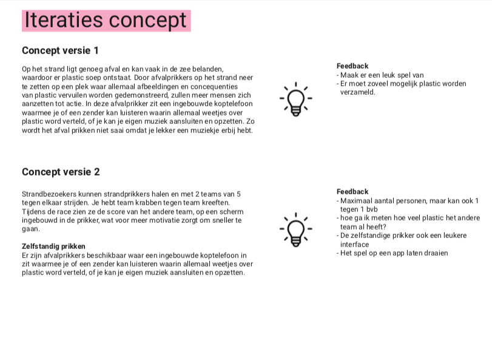
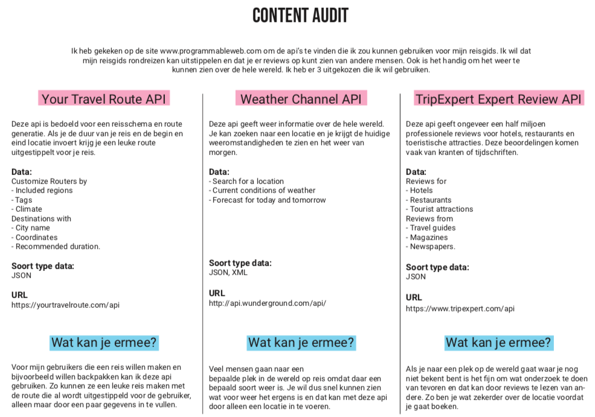

Conceptualiseren
CMD'ers genereren ideeën en ontwikkelen concepten voor (interactieve) communicatieproducten, communicatiediensten, en communicatiebelevingen. Het gaat om het verbinden van wensen van gebruikers, doelstellingen van opdrachtgevers en middelen (media, technologie) op basis van een strategie.
Voorbeelden
Plastic Whale - Productbiografie

Concept - Project Web
